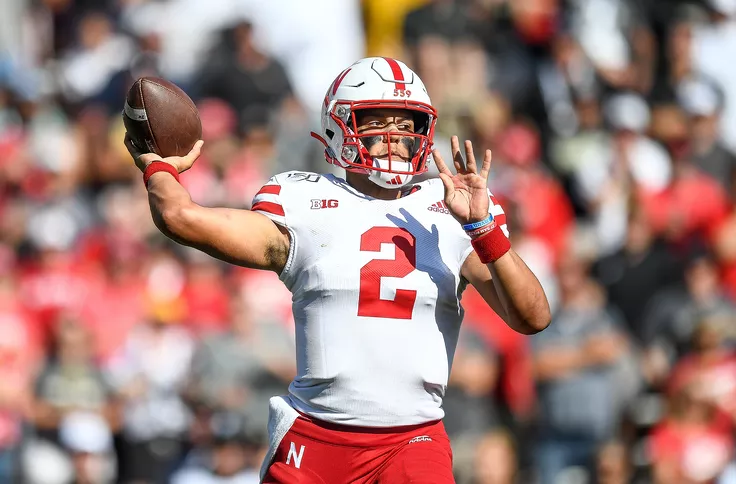

The Nebraska Cornhuskers football team competes as part of the NCAA Division I Football Bowl Subdivision, representing the University of Nebraska–Lincoln in the West Division of the Big Ten. Nebraska plays its home games at Memorial Stadium, where it has sold out every game since 1962. The team is currently coached by Scott Frost.
Nebraska's athletic programs, known as the Cornhuskers, compete in NCAA Division I and are a member of the Big Ten Conference. NU's football team has won 46 conference championships and claims five national championships, with an additional nine unclaimed. The school's volleyball team has won five titles and appeared in the national semifinal nine other times. NU plays its home football games at Memorial Stadium and has sold out every game since 1962. The stadium's capacity of 91,585 people is famously larger than the population of Nebraska's third-largest city.